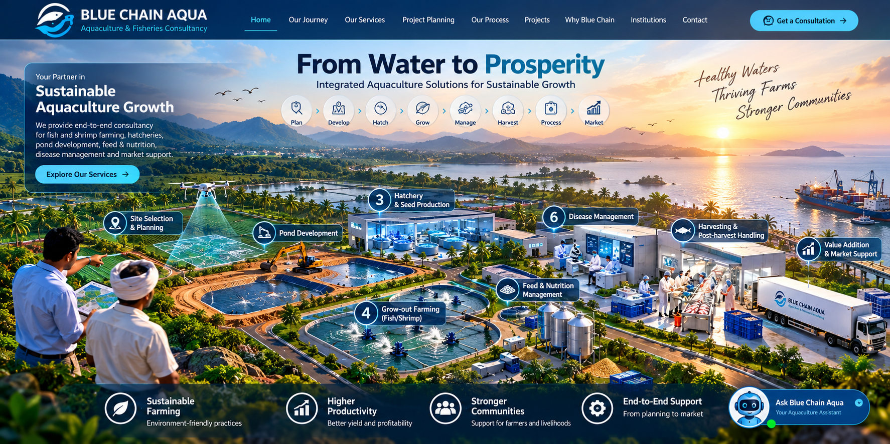
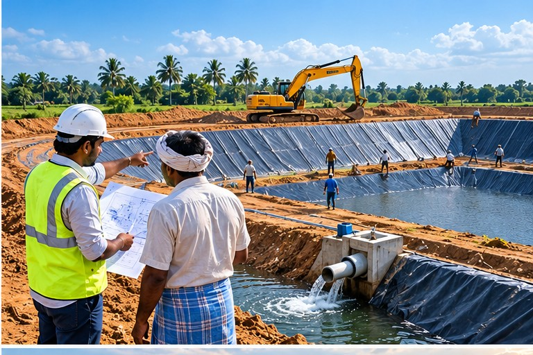
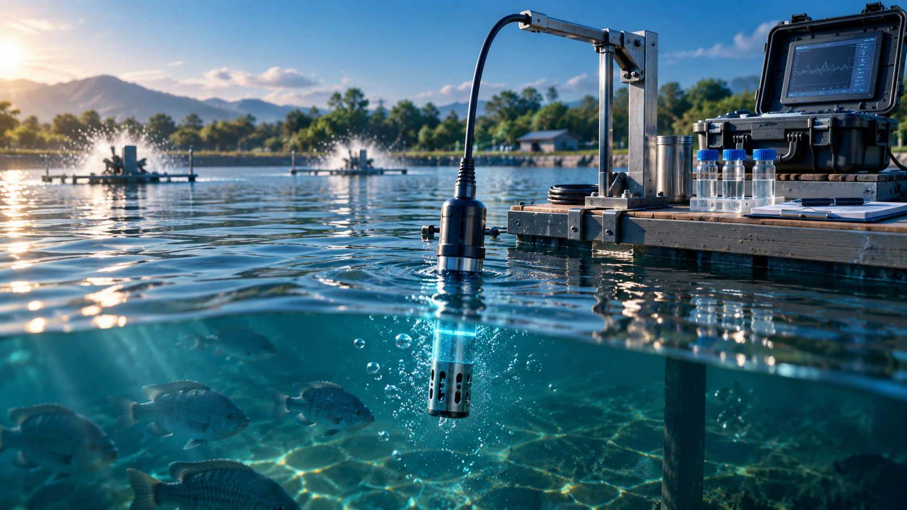
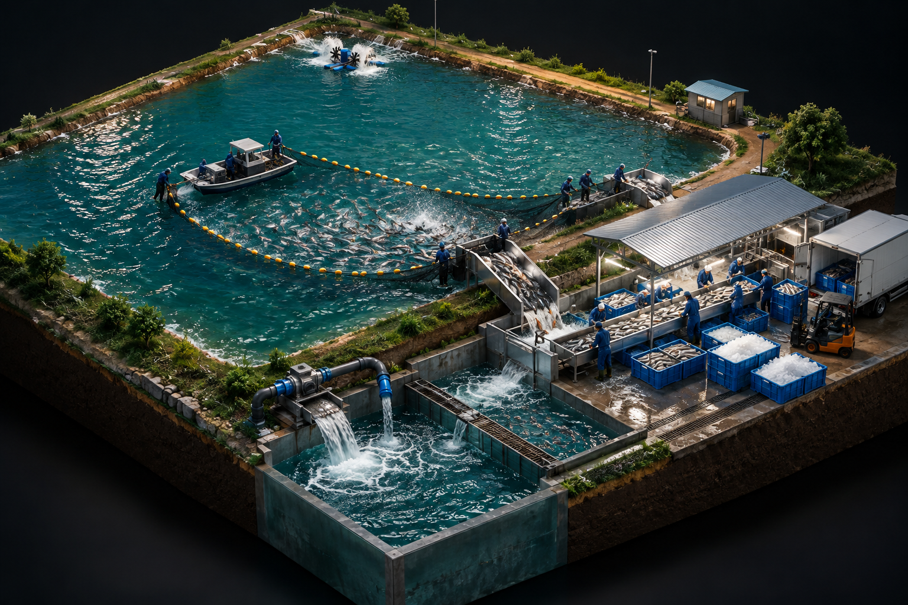
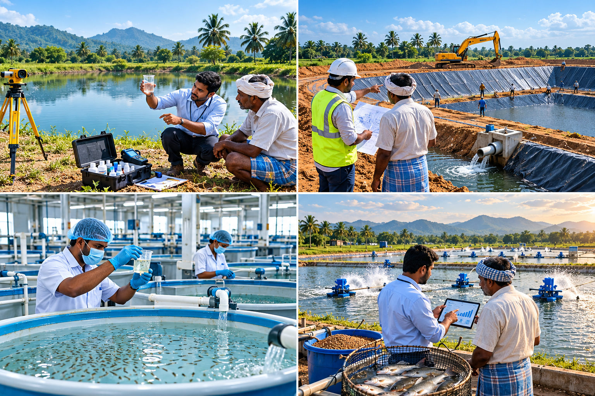
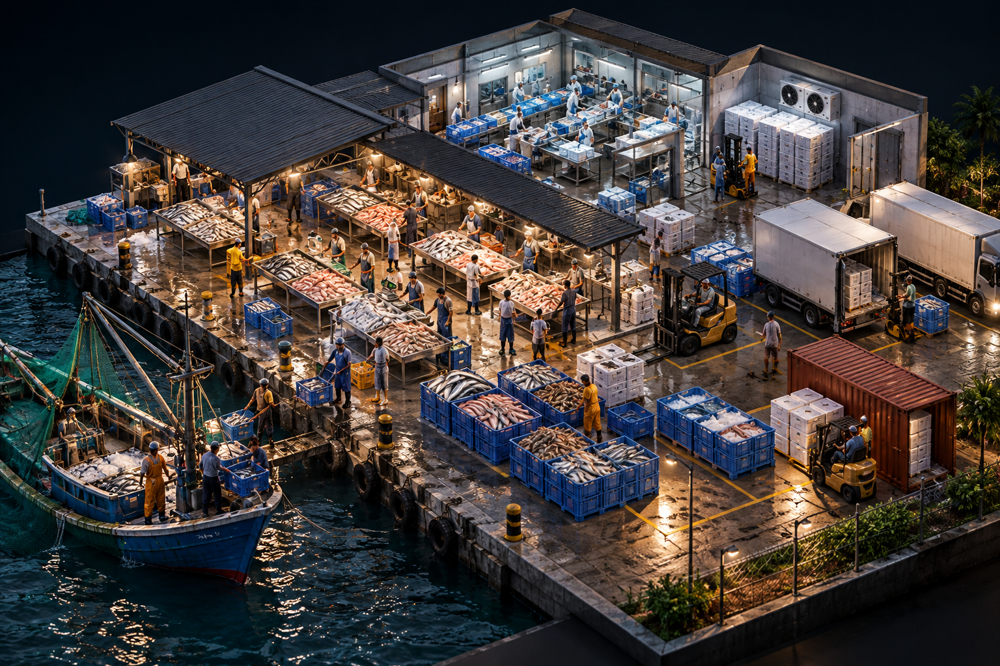

01

START · SITE
Site Selection
Assess land, water availability, access and site suitability before detailed planning.
Start with the right water, land and environmental conditions. We assess the site before capital is committed.
Follow the project journey step by step — from site selection and water planning to farming, hatchery, RAS and value addition.

Assess land, water availability, access and site suitability before detailed planning.

Plan pond layout, infrastructure, production capacity and practical farm operations.

Plan water-quality management and monitoring to support stable production.

Plan tanks, filtration, circulation and operational requirements for intensive production.

Develop hatchery and seed-production plans around species, capacity and market requirements.

Connect production with handling, processing, cold-chain and market opportunities.

Combine production, infrastructure, processing and supporting facilities into one practical, fund-ready project concept.
We use contact details submitted through this website only to respond to consultation and project enquiries. We do not publish or sell submitted contact information.
Website information is provided for general project-planning purposes. Final technical, financial, regulatory and funding decisions are confirmed for each project after assessment.
Have a farming or project doubt? Share your question and reach our team directly on WhatsApp.
Ask us on WhatsApp ↗